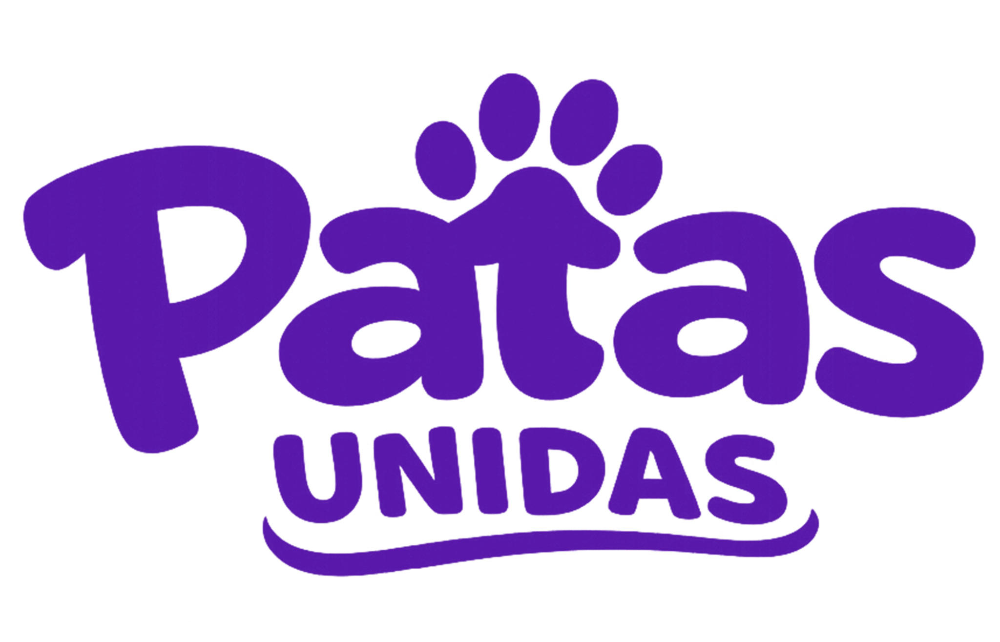
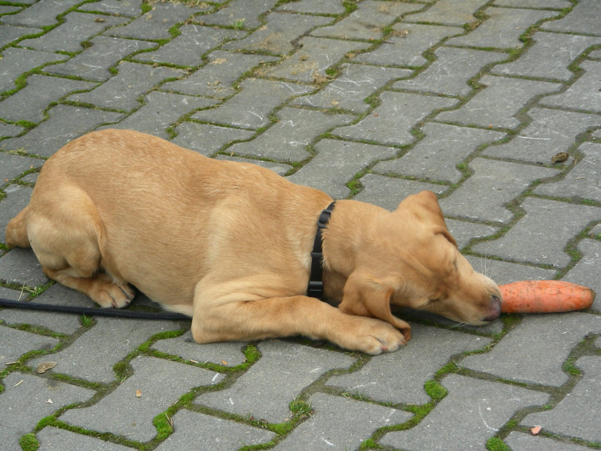
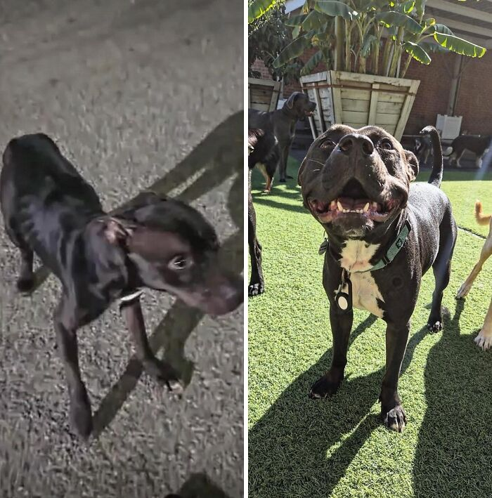
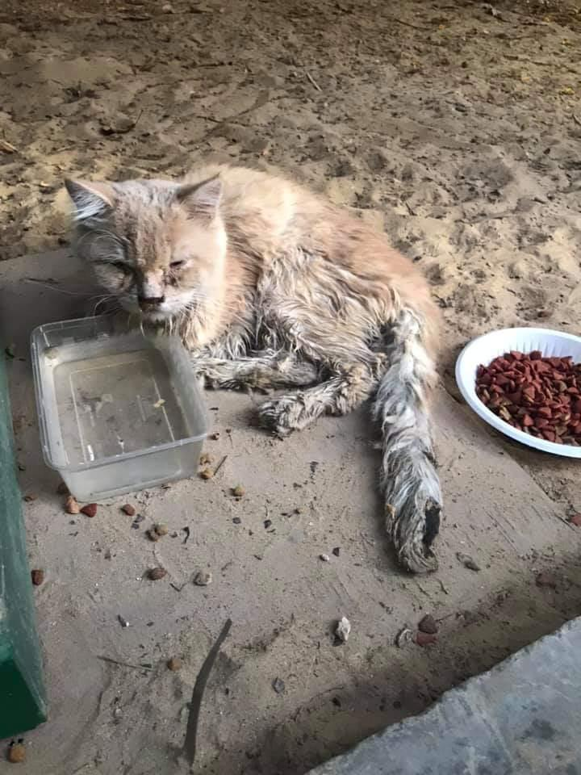

De abandono para segurança
Encontrada assustada e sem abrigo, Luna precisou de alimentação reforçada, exames e muito carinho para voltar a confiar.
- Antes: medo, fome e exposição ao frio
- Depois: tratada, segura e em recuperação estável
Sua doação ajuda com alimento, primeiros cuidados e atendimento para cães e gatos em situação de abandono. Cada contribuição acelera o resgate de quem mais precisa.
Enquanto você lê isso, um animal pode estar esperando por resgate. Sua ajuda agora faz a diferença. 💚

Copie a chave, doe em segundos e ajude um resgate a acontecer hoje.
Quanto mais perto da meta, mais casos urgentes conseguimos atender ainda este mês.
Junte-se a outras pessoas que já estão ajudando a resgatar e cuidar de animais.
Depois de mostrar como doar, a página reforça números, recorrência e acompanhamento para diminuir dúvida e aumentar conversão.
Pessoas que já contribuíram com doações avulsas e ajuda recorrente.
Histórias, evolução dos casos e prestação de contas para gerar confiança.
PIX rápido, botão flutuante e chave fácil de copiar no celular.
Uma boa doação não vira só número: vira comida, medicação, abrigo temporário e chance de recuperação.

Encontrada assustada e sem abrigo, Luna precisou de alimentação reforçada, exames e muito carinho para voltar a confiar.

Debilitado e com sinais de infecção, Mingau recebeu atendimento imediato, medicação e acompanhamento veterinário.

Thor chegou ferido e inseguro. Graças ao apoio dos doadores, recebeu tratamento, alimentação e cuidados contínuos.
Projetos que inspiram confiança mostram o que fazem com clareza. Aqui, a sua ajuda entra na rotina que mais importa: alimentação, primeiros socorros, tratamento e recuperação.
ajudam com sachês, água e alimentação emergencial.
apoiam a compra de ração e itens básicos de cuidado.
ajudam em consultas, exames e medicações.
do foco em resgates, alimentação e tratamento.
Veja como diferentes valores de doação se transformam em cuidados reais para animais resgatados.
Ajuda um animal resgatado a ter refeição e hidratação no primeiro atendimento.
Contribui com curativos, antipulgas, vermífugos e itens básicos para iniciar o tratamento.
Ajuda a custear consulta, transporte e medicações para casos mais delicados.
Somos uma iniciativa independente dedicada ao resgate e ao cuidado de animais em situação de risco. Com o apoio da comunidade, mantemos acolhimento temporário, alimentação, tratamento veterinário e acompanhamento de recuperação.
Recebemos chamados, avaliamos a urgência e damos o primeiro suporte com segurança, cuidado e rapidez.
As doações ajudam em consultas, vacinas, medicamentos, exames, castração e reabilitação.
Atualizamos histórias, gastos e resultados para que apoiadores acompanhem o impacto da ajuda.
Processo simples, pagamento seguro por PIX e transparência sobre como cada doação ajuda os resgates.
Sua contribuição ajuda diretamente no resgate, alimentação e tratamento dos animais acolhidos.
Copie a chave ou utilize o QR Code para doar de forma rápida, simples e segura pelo celular.

Prestação de contas clara sobre como as doações são utilizadas e o impacto gerado nos resgates.
Depoimentos curtos e humanos ajudam a aumentar a confiança na hora da decisão.
“Doei uma vez para um resgate urgente e continuei ajudando. O projeto mostra resultado e passa confiança.”
Mariana, apoiadora“A clareza das informações e a facilidade do PIX fazem muita diferença. É simples ajudar.”
Rafael, colaborador“As histórias emocionam, mas o que mais me convenceu foi ver exatamente como a doação é usada.”
Juliana, apoiadoraAssim você pode entender rapidamente como a doação funciona e apoiar com confiança.
Escolha um valor sugerido, copie a chave PIX e finalize pelo aplicativo do seu banco em poucos segundos.
Não. Qualquer quantia ajuda em alimentação, transporte, primeiros cuidados e apoio veterinário.
O projeto publica histórias, evolução dos casos e prestação de contas para mostrar como o apoio está sendo utilizado.
Uma pequena ajuda sua pode fazer uma grande diferença para um animal resgatado.